今年很多大牌都推出了学院风设计的单品，一改以往幼稚单一的印象。
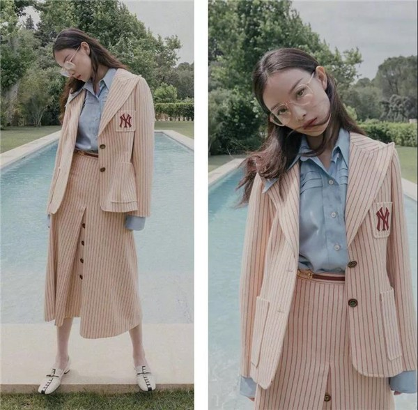
格纹裙，百褶裙，背带裙等典型的学生气单品都很有减龄的功效，非常适合开学的仙女们了，而就算是即使过了学生的年龄的朋友们也可以趁机年轻一回呀~
开学怎么穿最亮眼？哪些元素经典又减龄？
给理工男代表的格子衬衫道个歉，原来它这么好搭！比如：
超随性的当外套~
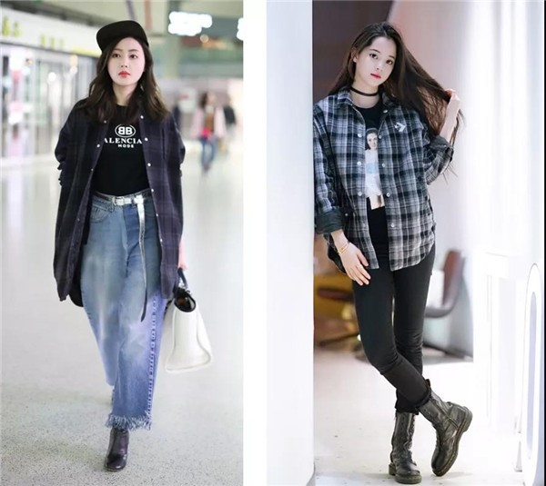
freestyle的系腰间~
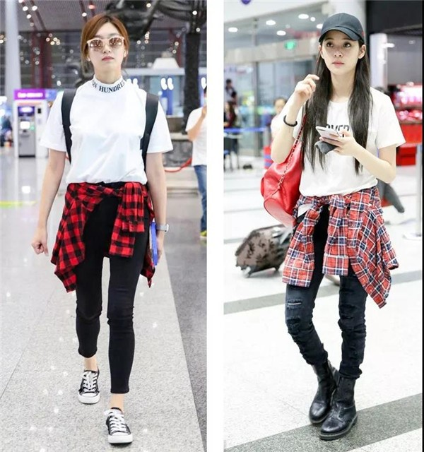
最简单的穿一套~
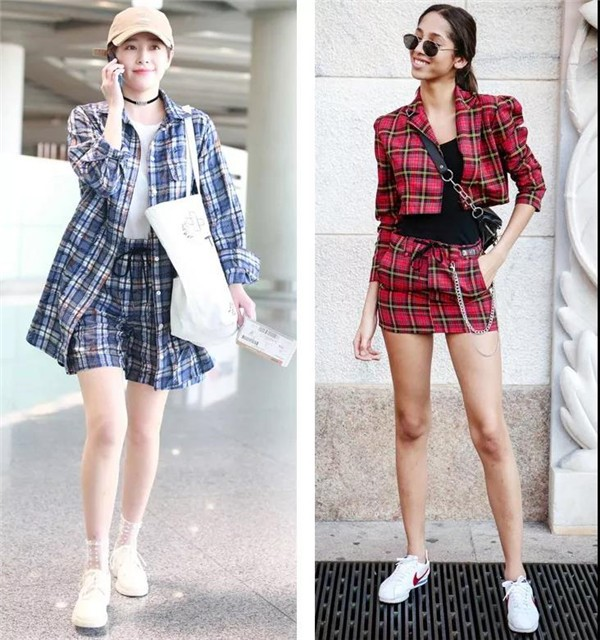
当然，除了格子衬衫，也要推荐格纹短裙！
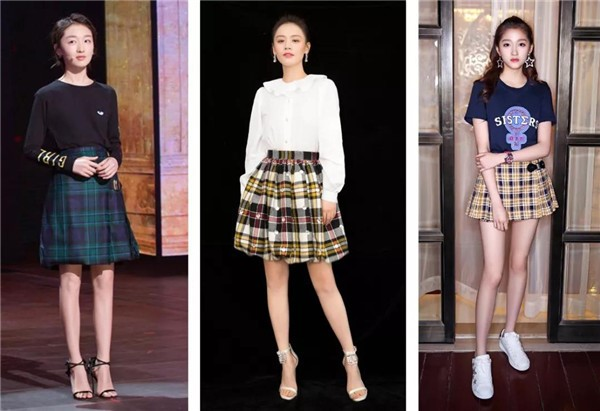
在时尚界有着极高地位的“格纹元素”更是被设计师们大胆运用在不同的材质和款式中彰显魅力。
不管你喜不喜欢，它总是那么轻易的就出现在任何单品中。
格纹半裙不像牛仔裙与纯色半身裙那样简单乏味，格纹短裙用撞色与格子轻松打破沉闷。
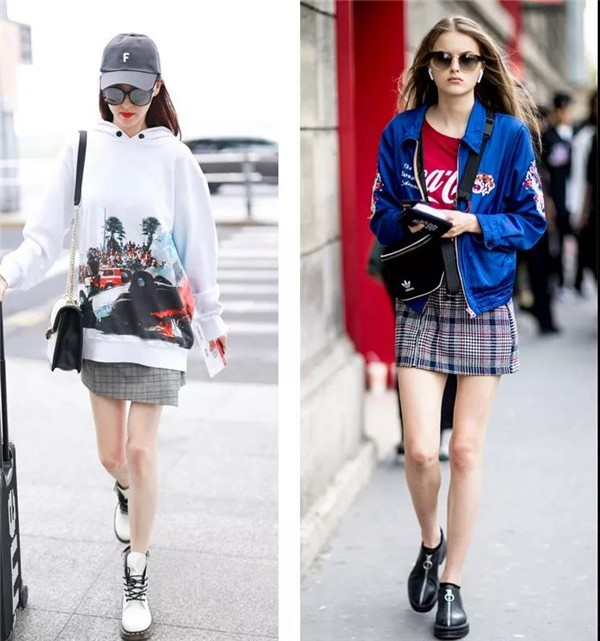
格子的魅力就在于，纵横交错的线条总是能排列出不一样的惊喜。
花色，大小不相同的格纹的组合简单却又不单调。所以在颜色和花纹上我们也可以有多样选择。
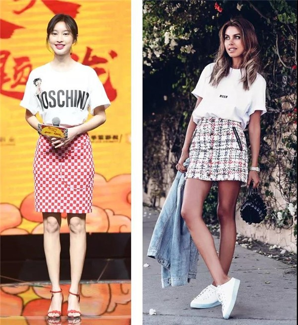
除了颜色，在剪裁上也建议大家可以选择一些比较有设计感的来搭配，就算是再简单不过的T恤卫衣有了趣味剪裁的格子半裙来组合，也同样出彩。
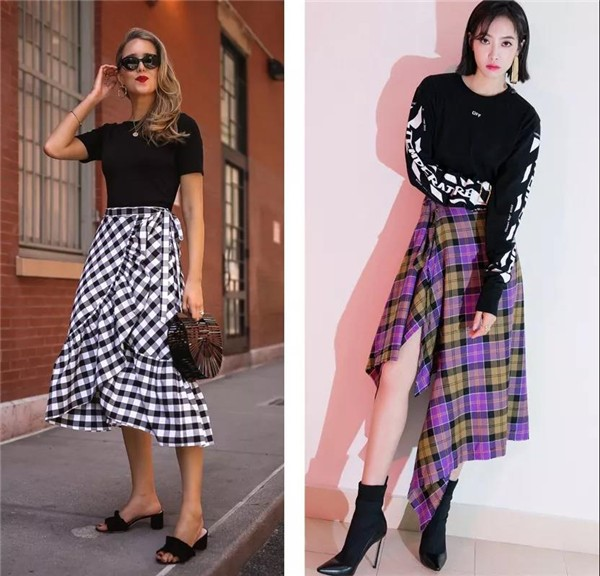
一条简单的百褶裙，就可以让你重温校园生活。
高腰线、A字裙摆，还能修饰身材，拉长腿部线条，分分钟变少女，可以说是女明星减龄最爱单品之一了。
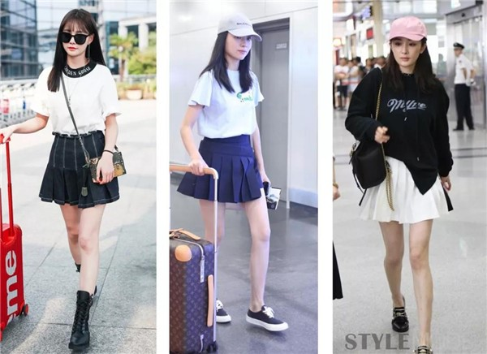
眼看着气温已经渐渐开始变凉，同样是百褶裙，我们可以选择长款来穿。
富有层次，时髦的不觉单调，还略带文艺气质的长款百褶裙也深受设计师们的喜爱，秀场上也曾多次出现。
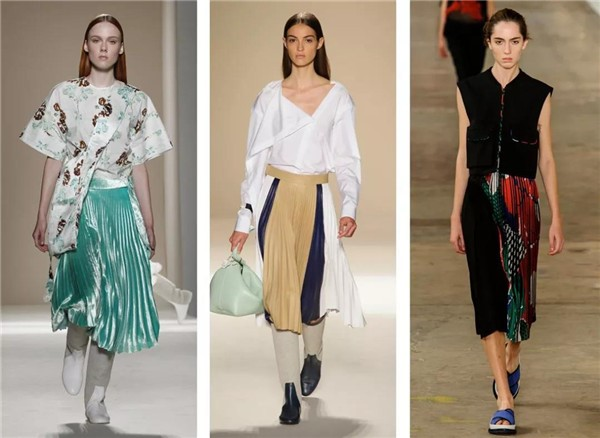
百褶裙同样也可以体现优雅感。选择一款浅色调百褶长裙，简单的上衣和高跟鞋，优雅lady的装扮立刻搞定。
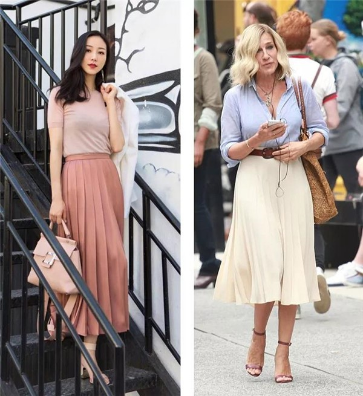
白衬衣可以算是它的最佳cp之一，不论是什么颜色，简单的白衬衣全都能hold住。
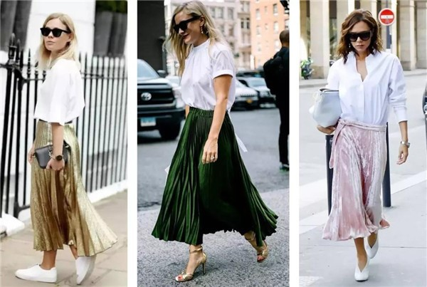
想要秒变可爱少女重回18岁？没错，这是一件背带裙就能解决的问题！
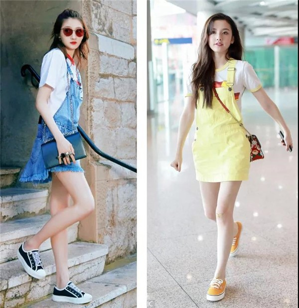
热爱街拍的时尚潮人们怎么会错过这一单品，有了纽扣和格纹的细节，简单的背带裙同样可以时髦飞起。
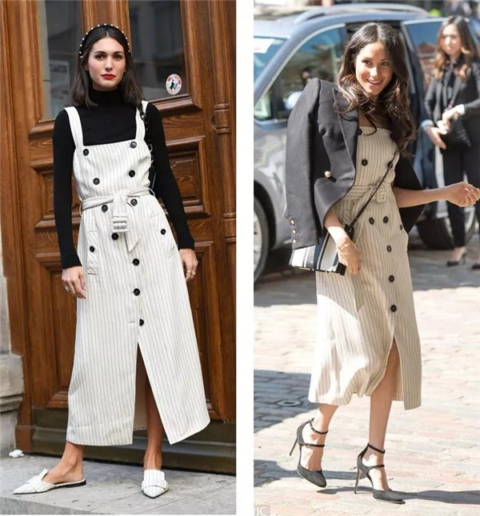
既然有背带裙，怎么少的了背带裤呢~帽子，白t，小白鞋，随性的休闲感又不失活泼，就是这么简单~
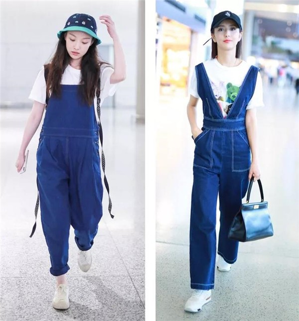
同样在材质的上的选择，宝宝们也不要只局限于牛仔，稍微有点改变，皮质或者天鹅绒质感的其实都可以哦，只要是背带款就行~

在入秋的季节，就用一条背带裤来搭配你的长袖衬衫吧~
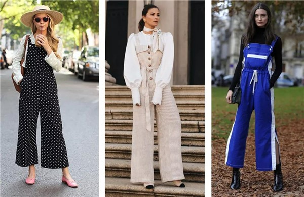
T台的模特告诉你，单穿温柔，叠穿时髦的针织背心堪称百搭单品。
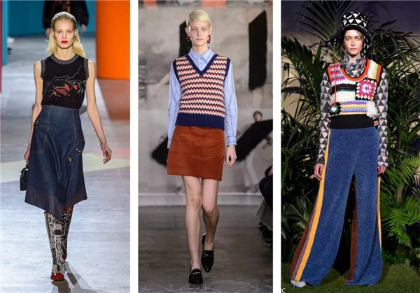
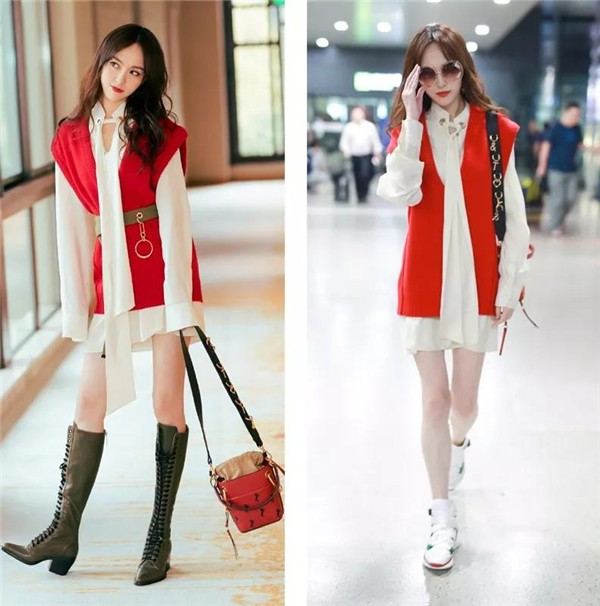
除了马甲，V字领针织衫也是不错的单品，同样也有校园感十足的减龄效果，换一下颜色和花纹，“校园文艺女神”是你没错啦~
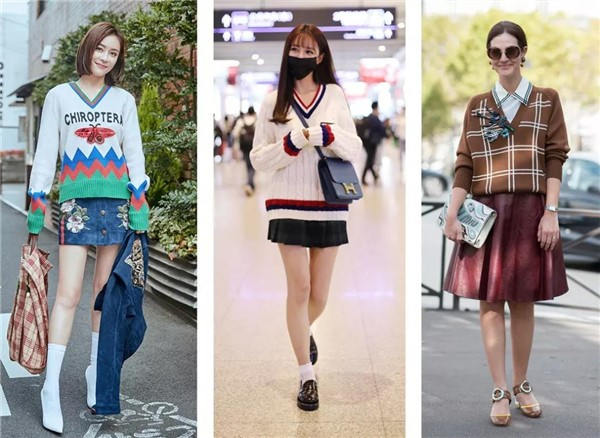